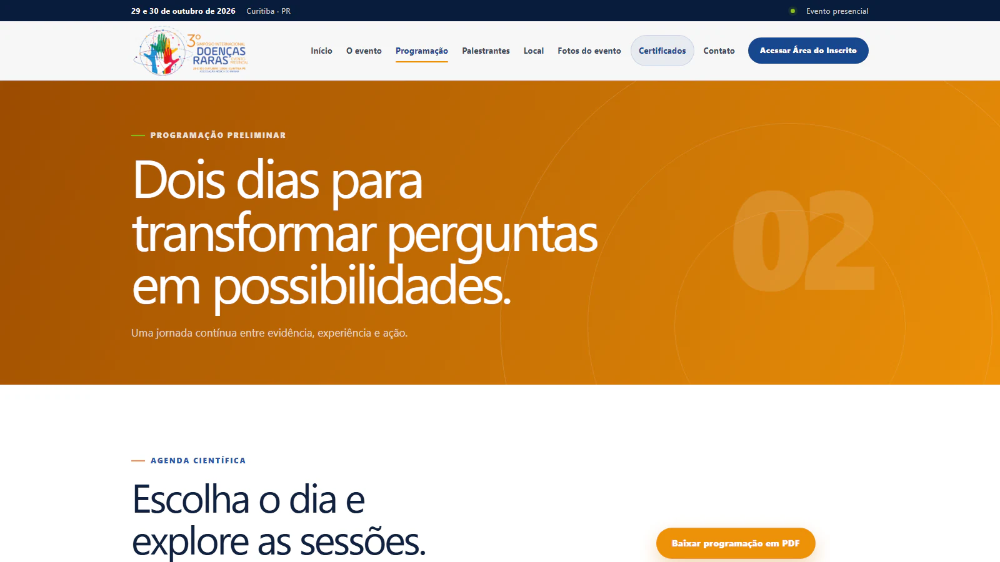
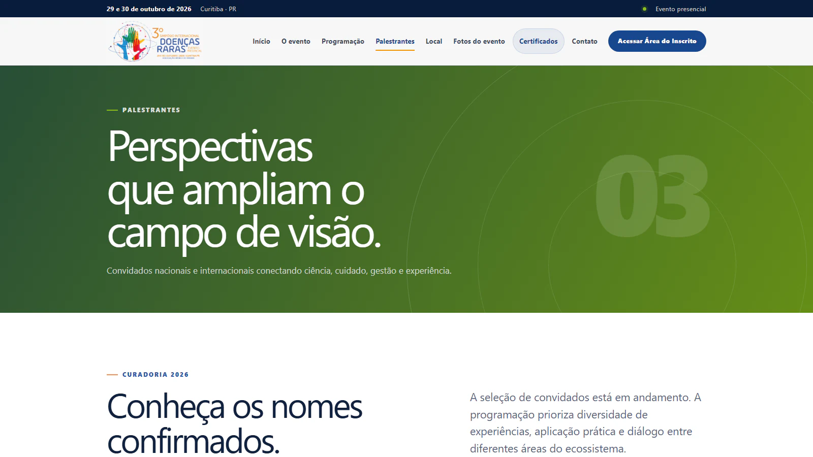

Case 01 · Site de evento
3º Simpósio Internacional de Doenças Raras
Uma plataforma completa para apresentar o evento, organizar o conteúdo científico e acompanhar a jornada de cada participante.

Visão geral
Conteúdo científico e serviços do evento em uma única experiência.
O site foi desenvolvido para o 3º Simpósio Internacional de Doenças Raras, realizado em Curitiba. A interface apresenta a identidade visual do encontro e conduz profissionais, pacientes, familiares e instituições pelas informações mais importantes.
Informação bem organizada
Programação, palestrantes, local, fotos e contato ganharam páginas próprias, com hierarquia clara e navegação responsiva. Metadados sociais e dados estruturados ajudam o evento a ser encontrado e compartilhado corretamente.
Jornada depois da inscrição
A área do inscrito centraliza o acesso do participante, enquanto a emissão de certificados mantém o site útil mesmo após o encerramento do evento.
Interface
Uma identidade forte para diferentes momentos da experiência.
Telas reais da página inicial, da agenda científica e da apresentação dos convidados.

